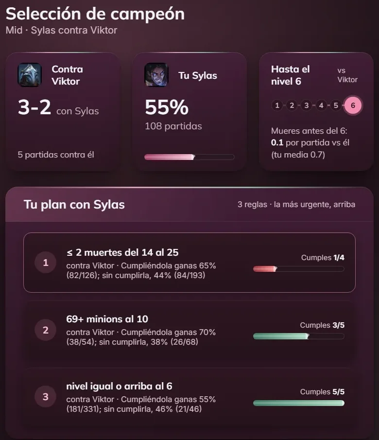

Champ select: tu plan para esta partida
Tu récord contra ese rival, tu win rate con el campeón, el estimado contra él y 3 reglas para esa partida, sacadas de tus números.
Si aún no sabes contra quién vas, Racha espera a que tu rival de línea elija.
